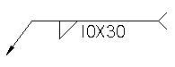
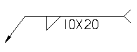
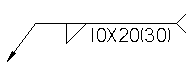

Stitch Weld Options Dialog Box
- Stitch Type
-
Allows you to specify the stitch construction option you want. The options are Stitch, Stitch + Offsets, and Offsets Only.
- Dimension Style
-
Sets the dimension style used for the fillet weld symbol. This setting determines how the fillet weld symbol is displayed in the Draft document.
- Stitch Parameters
-
Specifies the stitch weld parameters you want.
- Gap Length
-
Specifies the gap length between the weld material.
- Bead Length
-
Specifies the weld bead length you want.
- Annotation
-
Specifies the annotation output option you want. The output option you specify is applied to the weld symbol when you set the Tie to Geometry option on the Weld Symbol command bar in the Draft environment.
-
Length and Pitch—Lists the length of the weld bead and the distance between the start of one weld bead and the start of the next weld bead. For example, if the length of the weld bead is 10 millimeters and the gap between each bead is 20 millimeters, the annotation would display as 10 X 30.

-
N x L—Lists the number of weld beads and the length of each bead. For example, if you have 10 weld beads, and each bead is 20 millimeters long, the annotation would display as 10 X 20.

-
N x L (E)—Lists the number of weld beads, the length of the weld bead, and the gap length. For example, if you have a stitch weld with 10 weld beads, with each bead 20 millimeters long, and a gap between beads that is 30 millimeters long, the annotation would display as 10 X 20 (30).

-
- Offset
-
Specifies the offset values you want. You can specify an offset value for each end of the weld. When you specify an offset value, material is removed from the weld bead on the end you specify.
- Start
-
Specifies the offset value for the start end of the stitch weld.
- End
-
Specifies the offset value for the finish end of the stitch weld.
How do I
Construct a fillet weldConstruct a stitch weld
Construct a groove weld
Label a weld
Insert a weldment in an Assembly
Create a Weldment Assembly
Learn more
WeldmentsCreating drawings of weldment assemblies
Look up more details
Fillet Weld commandFillet Weld command bar
Fillet Weld Options dialog box
Groove Weld command
Groove Weld command bar
Groove Weld Options dialog box
Label Weld command
Label Weld command bar
Label Weld Options dialog box
Stitch Weld command
Stitch Weld command bar
Insert Weldment command
Insert Weldment command bar
Weldment Parameters dialog box
Weldment Assembly command
Weldment Assembly Dialog Box
Weldment File Type dialog box